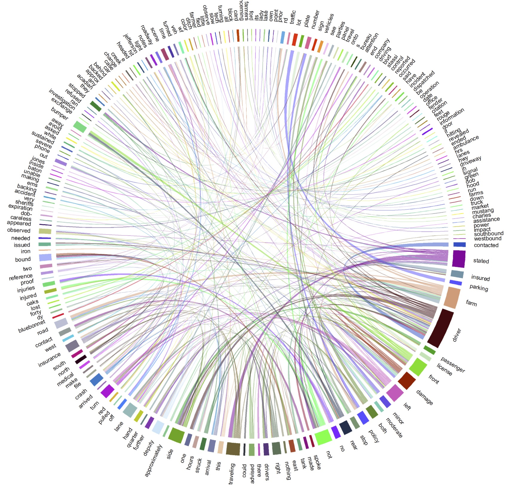

NIOSH Project: Crash Narrative Analysis
Subasish Das
Associate Transportation Researcher
Texas A&M Transportation Institute (TTI)
May 26, 2017
Outline
- Project Update
- Preliminary Analysis
- Future Tasks
Project Update
- Crash Narrative from Louisiana DOT is collected.
- Years: 2010-2015.
- Crash data from 2010-2014 is available. Waiting for 2015.
- Different text mining algorithms are applied by using 2010 crash narratives.
- Primary emphasis is on 'Farm Equipment' related crash narratives.
- Twitter Data Collection on Farm Equipment Related Crashes: ongoing.
Data Content

Sample Crash Narrative

Dataset 1 Bigram

Dataset 2 Bigram

Dataset 1 Trigram

Dataset 2 Trigram

Dataset 1 Chord Diagram
Dataset 2 Chord Diagram

What's next?
- Exploratory data analysis using both crash data and crash narrative data.
- Text mining on combined dataset.
- Metadata joining by using LaDOTD crash data.
- Bayesian network development.
- Topic Model development.